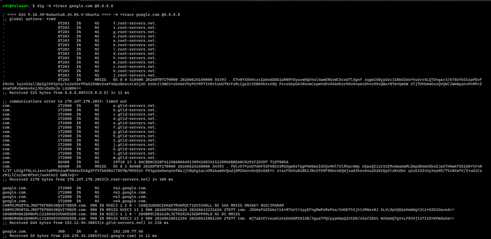

Objective : In this we are going to create a dns server and connect all the other machines to this dns server and explore related things.
Table Of Contents
- What is DNS?
- How DNS works?
- Example of a full DNS query
- Some terminologies related to DNS
- Seeing under the hood
- Setting up DNS using bind9
- Connecting other machines to DNS
- Conclusion
What is DNS?
Many people like to describe DNS as the phonebook of the internet. All the machines are assigned IP addresses on the internet. It is not likely to rememeber ip addresses of our favourite websites and other serivces.
When you type a website name like example.com into your browser, computers don't actually use that name to find the site. They ask the DNS server that "Hey! What is the IP of this address" to which DNS replies "Yeah, its 172.66.147.243"
The browser uses this IP address to communicate with the web server and display the website.
How DNS works?
When you try to access an url for example google.com, your browser ( or any other utility ) checks its cache ( or systemd-resolver ) whether does it have this already cached or not.
If not foud, then the recursive DNS resolver ( usually your ISP or a public DNS service ) is queried. This resolver asks a Root DNS server where can I find ".com"?
The Root DNS server are servers which contains information about TLD (Top-Level Domain) for eg .com, .net, .org etc. The IPs of these servers are stored locally on your machine as they are rarely changed.
Now if they are static ips then arent they suseptible to DDOS attacks? Well no, because these are not physical machines. Rather these IPs are hosted using anycast. Where instead of one machine having this particular IP ( which usually happens, one machine one ip ), many machine ( usually in data centers ) host an instance of these servers. So instead of one machine, we have multiple machines in this world serving this IP.
Now, the TLD replies with the authoritative name server ( described below in terminologies ) for google.com. Then the resolver asks the authoritative name server the ip of google.com and the server returns the IP.
The resolver caches the result and returns it to your device. The server can also define a time to live (TTL) for this dns query so that after a certain time, our machine would need to put another request for the same address.
( If this doesn't makes much sense, the following example would clear things up! )
Example of a full DNS query
We will use dig utility to trace the whole journey of our DNS request. This command would return the detailed dns query.
$ dig -4 +trace google.com @8.8.8.8

We can observe that it first queries the root DNS server. ( By default, port 53 is used for DNS )
. 87203 IN NS a.root-servers.net.
. 87203 IN NS b.root-servers.net.
. 87203 IN NS c.root-servers.net.
...
. 87203 IN NS m.root-servers.net.
;; Received 525 bytes from 8.8.8.8#53(8.8.8.8) in 11 ms
One of these server replies with the address of ".com"
com. 172800 IN NS a.gtld-servers.net.
com. 172800 IN NS b.gtld-servers.net.
com. 172800 IN NS c.gtld-servers.net.
...
com. 172800 IN NS m.gtld-servers.net.
;; Received 1170 bytes from 170.247.170.2#53(b.root-servers.net) in 109 ms
Then one of the ".com" server replies with the address of the authoritative server of google.com
;; Received 1170 bytes from 170.247.170.2#53(b.root-servers.net) in 109 ms
google.com. 172800 IN NS ns1.google.com.
google.com. 172800 IN NS ns2.google.com.
google.com. 172800 IN NS ns3.google.com.
google.com. 172800 IN NS ns4.google.com.
;; Received 644 bytes from 192.12.94.30#53(e.gtld-servers.net) in 238 ms
Then one of the servers from the list replies with ip address of google.com
google.com. 300 IN A 142.250.77.46
;; Received 55 bytes from 216.239.34.10#53(ns2.google.com) in 11 ms
Now this is what exactly happens behind the scenes when your dns resolver tries to resolve the ip address of a url.
Some terminologies related to DNS
- Namespace: It is a hierarchial naming structure used to organize domain names on the internet. It starts at the root and branches into top-level domains and then individual domains. Heres how the current structure looks like :
- Domain: A named section within the namespace. For eg above, college is a domain, mail.college.ac.in is a domain, so on and so forth.
- Zone: A portion of the DNS namespace that is managed by a specific administrator or DNS server. A zone contains DNS records for one or more domains or subdomains. For eg college is a zone which contains records for webpage, department info, mail server etc.
- Authoritative DNS Server: A DNS server that stores the official DNS records for a zone and provides the final, authoritative answers to DNS queries about names in that zone.
. (Root )
|
-------------------------------------
| | | |
.com .org .edu .in <- Top-Level Domains (TLDs)
| |
example.com ac.in
| |
----------- ----------
| | | |
www mail co.in gov.in
| | |
Host A Mail Server college.ac.in
.
|__ in
|__ ac
|__ college
|__ www.college.ac.in
|__ mail.college.ac.in
|__ cs.college.ac.in
A useful analogy. Imagine the namespace as the world map, it knows where everything is. Domains can be thought of as countries. Zones can be thought of as states in the country. And the Authoritative Server can be thought of as the state government which manages and stores all the records of the state. The zone is just a map, authoritative server is the one which servers.
Seeing under the hood
Before we dive deep, I present to you a summary of how DNS
Application
(curl, ping, ssh)
│
▼
glibc getaddrinfo()
│
▼
/etc/nsswitch.conf
│
┌─────────────┴─────────────┐
▼ ▼
/etc/hosts DNS lookup
│
▼
/etc/resolv.conf
nameserver 127.0.0.53
│
▼
systemd-resolved (local stub)
127.0.0.53:53
│
┌────────────────────┼────────────────────┐
▼ ▼ ▼
Cache Interface-specific DNS DNSSEC/DoT
│
▼
Upstream DNS server (e.g. router,
public DNS, VPN-provided DNS)
│
▼
Authoritative DNS
│
▼
IP address returned
│
▼
Application connects
Let us say that we use curl to see an webpage. Curl does not implement a mechanism for dns of its own, rather it utilises the existing machinery provided by linux kernel.
Curl calls getaddrinfo() ( provided by glibc ) which reads configuration from /etc/nsswitch.conf . This tells us whether to check /etc/hosts or maybe multicast dns or ask systemd-resolved or use normal dns.
Before DNS lookup happens, this file, /etc/hostsb is checked. If the hostname exists here, no dns query happens. If not then dns query happens.
This file, /etc/resolve.conf contains details of the nameserver to refer to for making the dns query. We would often see 127.0.0.53 being a part of this file. This 127.0.0.53 is the local resolver which forwards our request to systemd-resolved, used by many distributions, it decides where our queries go. This service usually runs on port 53 of 127.0.0.53 as both TCP and UDP port. So finally, applications send their packets to 127.0.0.53:53
The systemd-resolved is required because it provides DNS cache, VPN support, DNS over TLS, Better integration with network managers, Per-interface DNS, DNSSEC validation etc. To interact with systemd-resolved we can use resolvectl
The systemd-resolved is the daemon itself which receives dns request, caches them, chooses dns server and forwards query. It gets its DNS servers usually from DHCP, static configuration, NetworkManager, systemd-networkd, VPN etc.
Also /etc/resolv.conf can be asymlink which means /etc/resolve.conf -> /run/systemd/resolve/stud-resolve.conf which contains "nameserver 127.0.0.53". It is diff from /resolve.conf as /etc/resolve.conf contains the actual upstream DNS server.
So in summary, /etc/resolv.conf tells applications where to send DNS queries, while systemd-resolved determines how and where those queries are ultimately resolved, adding caching and other functionalities.
Setting up DNS using bind9
First of all we install:
$ sudo apt install bind9 bind9utils dnsutils
Bind9 is the DNS server, bind9-utils contains the management tools and dnsutils contains tools like dig.
Now we study the configuration files. The typical layout is something like this:
/etc/bind/
named.conf ( simply loads the below mentioned files )
named.conf.options ( options for the dns server )
named.conf.local (local zones )
named.conf.default-zones ( default zones )
/etc/bind/zones
To creat our own zone we edit the /etc/bind/named.conf.local file.
zone "lab.local" {
type master;
file "/etc/bind/zones/db.lab.local";
}
Here, the map or the information would be in the zones folder in the db.lab.local file. Now we create the zone file ( do it yourself ).
$TTL 604800
@ IN SOA dns1.lab.local admin.lab.local (
2
604800
86400
2419200
604800 )
@ IN NS dns1.lab.lcoal.
dns1 IN A 10.2.0.20
server IN A 10.2.0.10
web IN A 10.2.0.30
The TTL specifies for how long we should cache the dns query before asking for it again. Other parameters inside the bracket can be understood by reading the docs.
SOA means start of authority which contains metadata. NS means nameserver so lab.local would have dns1.lab.local as its nameserver. And obviously at the end we add our records so for eg web.lab.local would correspond to 10.2.0.30.
Now we just restart bind9 and check if the files work.
$ sudo named-checkconf
$ sudo named-checkzone lab.local /etc/bind/zones/db.lab.local
$ sudo systemctl restart bind9
And now we have our dns server. We can test it using
$ dig @127.0.0.1 web.lab.local
Connecting other machines to DNS
To allow other machines to connect, we simply configure the netplan file.
network:
ethernet:
enp0s8:
addresses:
- 10.2.0.20/24
nameservers:
addresses:
- 10.2.0.20
search:
- lab.local
dhcp4: false
dhcp6: false
version: 2
In this we added the nameservers where we mentioned the address of our dns server in our local network and also included the lab.local doamin which basically means that when any query related to this domain floats, send it to enp0s8. Another way if you are not using bind9 then you can manually add the nameserver in /etc/resolve.conf .
Conclusion
In this article we set up a DNS server and connect other machines to this DNS server. Also we explored some other tools and understood how DNS works.